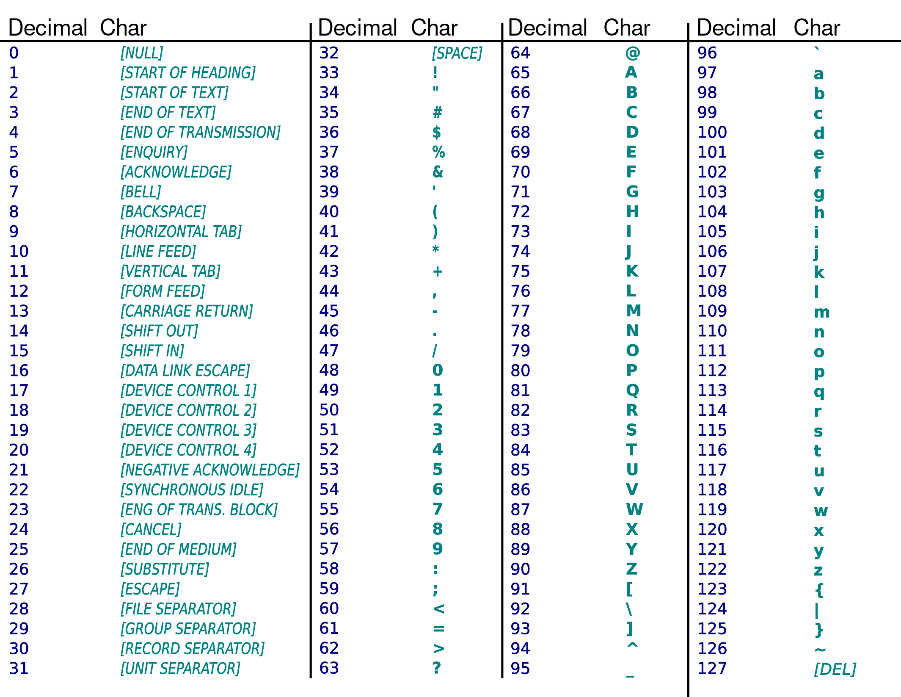

ASCII code and special characters
Recall ASCII table from Lecture-1.1:
Python has built-in functions to convert ASCII code (decimal) to/from a single character.
1>>> ord("a") # get ASCII code for letter "a"2973>>> ord("A")4655>>> ord("$")6367>>> ord("hi") # doesn't work for more than one character8TypeError: ord() expected a character, but string of length 2 found910>>> chr(70) # get character for ASCII code 7011'F'12>>> chr(103)13'g'
Write a program that takes a string as input and shifts each letter left by 3 according to ASCII table.
i.e. A → >, B → ?, C → @, D → A, E → B, etc.
1word = input("Enter a word: ")23# shift each letter in word by 3
Escape characters
There are special characters such as shown below, which we cannot direct enter in a string:
- newline character: This is the character representing “enter” or “return” key.
- tab character: This is the character representing “tab” key.
1# Trying to enter a newline character directly fails:2message = "Hello3world"
message = "Hello
^
SyntaxError: EOL while scanning string literal
To include a newline character in a string we can use the escape character \n in the string:
1message = "hello\nworld"2print(message)
hello world
\n is stored as a single character even though it looks like two.
1>>> ord("\n")210
Another escape character is \t which represents the tab character.
It is useful as a separator when displaying values:
1# print uses space as separator by default2print("Khalid", 85)3print("Reza", 90)45# Using tab as separator6print("Khalid", 85, sep="\t")7print("Reza", 90, sep="\t")
Khalid 85 Reza 90 Khalid 85 Reza 90
Controlling print() function
In example above, we used a keyword argument sep= to tell print which separator to use between values.
Unlike the usual arguments, keyword arguments are given in the form name=value; in the example sep is the name of argument and "\t" is the value.
1# separator can be any string2>>> print("Alice", 90, 3.14, sep=",")3Alice,90,3.1445>>> print("Alice", 90, 3.14, sep="|")6Alice|90|3.1478# even longer than one character9>>> print("Alice", 90, 3.14, sep="-----")10Alice-----90-----3.141112>>> print("Alice", 90, 3.14, sep="") # No separator!13Alice903.14
By default, print() function displays a newline character \n at end of line.
1>>> print("hello") # "\n" is displayed after "o"2hello3>>> print() # no arguments, just prints "\n"45# there is just a blank line above
We can change this end character using another keyword argument to print() function, end=.
1print("A sequence of numbers:")2print(1, end=",")3print(4, end=",")4print(9, end=",")
A sequence of numbers: 1,4,9,
This is useful in a loop:
1N = 102for i in range(N):3 print(i*i, end=", ") # comma and a space
0, 1, 4, 9, 16, 25, 36, 49, 64, 81,
Change the above example to not print the last comma. For example,
0, 1, 4, 9, 16, 25, 36, 49, 64, 81
Multiline strings
Using \n, create a single string that contains all of the following lines:
Shopping list
- Milk
- Eggs
- Apples
Python provides a better create multiline strings using triple quotes: ''' or """.
1shopping_list = '''Shopping list2- Milk3- Eggs4- Apples5'''67# OR the following, both are same89shopping_list = """Shopping list10- Milk11- Eggs12- Apples13"""1415print(shopping_list)
String methods
A method is similar to a function except that a method is always called on an object:
object.method_name(argument1, argument2, …)
str type has several methods that we can call on a string object:
1>>> "hello".upper() # calling method upper() on the string "hello"2'HELLO'34>>> message = "hello"5>>> message.upper() # using variable that refers to string6'HELLO'78>>> message = 109>>> message.upper() # upper() only available for str objects10AttributeError: 'int' object has no attribute 'upper'
Many useful methods of strings:
1s = "Luke, I am your father"23# s.lower() : returns a copy of s, but with all lower case letters.4>>> s.lower()5'luke, i am your father'67# s.upper() : returns a copy of s, but with all upper case letters.8>>> s.upper()9'LUKE, I AM YOUR FATHER'1011# s.replace(old, new) : returns a copy of s with all occurrences of12# the substring old replaced by new.13>>> s.replace("am", "am not")14'Luke, I am not your father'1516>>> s.replace(" ", "") # empty string will delete17'Luke,Iamyourfather'1819# s.count(c) : returns the number of non-overlapping20# occurrences of substring c in s.21>>> s.count("a")2222324# s.find(c) : returns the index where the substring begins in s begins.25# If c is not a substring of s, then -1 is returned.26>>> s.find("you")271128>>> s.find("hi")29-1
In just one expression, compare if two strings s1 and s2 are equal in a case-insensitive manner.
in operator (membership operator)
- In Python in is a keyword.
- The in and not in operators test for membership.
- We can use them with strings to test if one string is a substring of another.
1>>> s = "More garbage"2>>> "age" in s # True if "age" is found anywhere in s3True4>>> "x" in s5False6>>> "w" not in s7True
while statement
while statement is another way to repeatedly execute a block of code.
General format of a while loop:
Initialize variables so that condition is True
while condition :
code block
update variables that affect condition
What while loop does:
- Evaluate the
condition - If
conditionevaluates to False, loop body is not executed. - If
conditionevaluates to True, run the loop body (all indented lines of code)
a) In loop body we perform some task,code block, and update variables that may change theconditionvalue
b) Go back to step 1
1# a program to compute sum of first N numbers2N = 1034total = 056i = 1 # Set value so that condition below is True7while i <= N: # Check if condition is True8 # main task of summing numbers:9 total = total + i1011 # update i, affects value of condition i <= N12 i = i + 11314# print result outside the loop15print(total)
It is a common mistake to forget updating the condition inside loop body.
See what happens when you remove/comment out the line i = i + 1 in above example.
The loop will never end — an infinite loop!
Augmented assignment statements
Augmented assignment is the combination, in a single statement, of a arithmetic operation and an assignment statement:
1x = 32y = 534x += 1 # same as: x = x + 156x += y # same as: x = x + y78x += x * y # same as x = x + x * y910x -= 5 # x = x - 51112x *= 2 # x = x * 2
Similarly, other operators exist: /=, //=, %=, **=.
These are very useful, especially when updating the condition in while loop.
Indefinite loops
So far we have seen loops that work with fixed number of steps.
But while loop can be used for repeating code for unknown number of steps:
1# program to keep asking for password until correct password is entered.2# Assume that correct password is "1234"34password = input("Enter password: ")56while password != "1234":7 print("Incorrect password, try again!")89 password = input("Enter password: ")1011# If we reach this line it means "1234" was entered as password:12print("Login successful!")
Change above example to ask for an email and password.
Program should continue until both email and password are correct.
Password comparison must be case-sensitive, while email comparison should be case-insensitive.
For comparison, just choose any email, password that you like.
for vs while loops
- for loops are better when we want to go over a fixed sequence such as a a string or a series of numbers
- while loop is more flexible an allows arbitrary conditions and number of steps. e.g. do something until user enters correct data
Importing modules
A module is a file containing definitions and statements.
Every .py file is a module. The name of the module is the name of the file.
A program is a collection of code with a common purpose.
- We can split a program into multiple modules (files)
- We group related code into the same module e.g. math
import statements
We use code inside a module by importing the module. We import a module using import statement:
1import math23# Now we can use the module by its name—math—45# We can call functions inside the module using dot operator6x = math.sqrt(16)7print(x)89y = math.sin(math.pi / 2)10print(y)
Another way of using a module is to import functions/variables from the module:
1from math import sqrt, sin, pi23# Now, we can call sqrt and sin without the "math." prefix4x = sqrt(16)5print(x)67y = sin(pi / 2)8print(y)
Use help() function to see list of all function contained in math module:
1>>> import math2>>> help(math) # will display a long doc, not showing here34>>> help(math.sqrt) # show help on a specific function5Help on built-in function sqrt in module math:67sqrt(x, /)8 Return the square root of x.
random module
In Python, we can generate (pseudo)-random numbers using the random module.
The module provides us with a lot of different functions but for the moment we’ll focus on the following:
- random() – It returns a random float value between (inclusive) and (exclusive)
- randint(x, y) – It returns a random int value between x and y, both included.
Each time your execute these functions, you will get a different value, try it!
1>>> import random2>>> random.random()30.128262462259396414>>> random.random()50.3379714919593481767>>> random.randint(1, 10)899>>> random.randint(1, 10)101
The seed
- The random number generation is not truly random.
- It is determined by an initial value that is called the seed.
- By default, the seed used to generate the numbers is the current system time.
- This means that each time we run the program, the seed will be different, and the numbers generated will also be different.
- We can fix the seed using the function random.seed()
Run the following with the seed function call and without it (comment the line):
1import random2random.seed(123) # Try with and without this line3i = 04while i < 5:5 print(random.randint(1, 100))6 i += 1